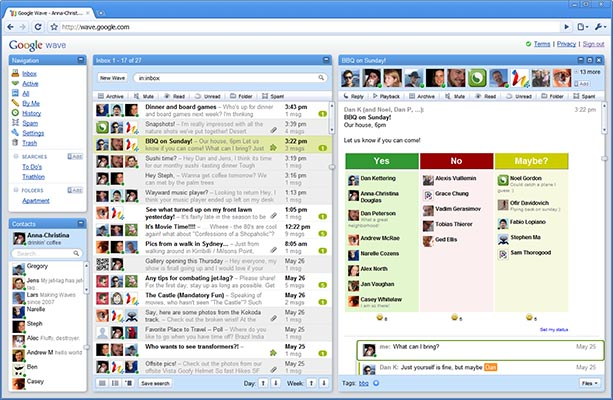

Introduction.markdown
Rocket can seem complicated at first, but there's not much to it. It's highly recommended to watch the screencast, as it goes over a lot of the core concepts and rationale. Much of what follows is based on the screencast, so you can probably skip this if you've watched it.
Why Create Rocket?
I (Michael Tomer, AKA actsasbuffoon) initially began Rocket.io because my company (Patient360) is building a system for keeping track of patient medical records. This sort of product is usually sold to hospitals and medical practices, and they are a critical part of making sure patients receive the care that they need. As you can imagine, it's important that medical professionals have the most accurate and up-to-date information possible about their patients. People's lives literally depend on it.
As such, the data needs to be realtime, and everyone needs to have the same information available to them simultaneously. It doesn't help anyone if a technician notes that the patient is deathly allergic to a given drug, but that information won't show up for the doctor until she refreshes the page.
It's also important that these systems are responsive. Doctors have precious little time to spend with each patient, and waiting several seconds for information to load is unacceptable. So I asked myself, "How can I build a system that is responsive, realtime, scalable, and easy for me to maintain?" The answer is Rocket.io.
What is Rocket?
As mentioned earlier, Rocket.io is a Ruby based framework. That's important, as Ruby has a great library ecosystem. Many realtime apps are being created with Javascript these days, which is perfectly fine, but Javascript is still young as a server side language. As a result, there are many things that are still difficult to do with Javascript.
One of Rocket's most obvious features is that it uses Web Sockets for nearly everything. For the uninitiated, Web Sockets are a protocol for realtime bidirectional communication. Virtually every piece of data sent from the server will be pushed to the user in realtime, which makes synchronizing data very simple. When combined with tools like Backbone.js or Knockout.js, keeping users synchronized is almost effortless.
Rocket is also completely event driven, which means it scales well and is very fast. If you've ever written event driven code before, then you're undoubtedly dreading writing a dozen nested callbacks. Fear not, as Rocket.io is built on Ilya Grigorik's excellent EM-Synchrony library. Synchrony allows you to write what looks like normal blocking code, but is in fact completely evented. I'll go over some code examples in a bit, but trust me, it looks exactly like the code you write every day in your Rails apps.
Rocket also provides you with a simple and consistent API for calling code on the server and client side. There's only one method responsible for transmitting data, and the messages are just JSON. We'll go over some examples in a few minutes.
It should be noted that since Rocket makes heavy use of Javascript and Web Sockets, it is not going to be a good choice for content oriented sites. For instance, blogs, content management systems, and forums would be better suited to a more traditional framework like Rails. There are many reasons why this is true, not least of which is that content loaded via Javascript is invisible to search engines. Instead, Rocket is about building rich single page applications that run in the browser.
A Detour
Before we go any further, let's take a brief detour. What can we learn from World of Warcraft about building scalable web services?
If you're reading this article then it's a safe bet that the game requires no introduction. At peak, World of Warcraft had over 11.1 million subscribers, making it the most popular massively multiplayer game to date. Obviously Blizzard Entertainment knows a thing or two about building scalable web services.
At first, it might not seem like World of Warcraft has much in common with a web application, but consider this; the entire game is built as a client/server application which is backed by a SQL database. Sound familiar? The client may be a 3d game, as opposed to a web browser, and everything may be sent via a raw TCP connection as opposed to HTTP, but there are fundamental similarities.
Think about all the CPU cycles that go into World of Warcraft. Not only are there many servers, but there are literally millions of client computers running as well. Much of the processing occurs on the GPU, but let's include those cycles as well.
Clearly the worst way you could build such a system would be by performing all operations on the server. Every pixel rendered, every texture smoothed, every animation tweened; all would occur on the server. Perhaps each image would be rendered out as a JPEG and sent to the user frame by frame. Obviously that wouldn't scale very well. Instead, the majority of processing occurs on the client's computer.
In World of Warcraft the server has three primary purposes. The first is global persistence. The position and orientation of every player, mob, and NPC must be stored in a database on the server. They also need to store all of the inventory items, attributes, equipment, and pretty much everything else. As web developers we also have global persistence in the form of server side databases.
Note that World of Warcraft also has local persistence in the form of settings and preferences such as the resolution of the player's monitor and the quality of the shadow rendering. It wouldn't make sense to store those settings globally, as a player will want different settings on other computers. As web developers, we also have access to local persistence, in the form of various local storage APIs. Many modern browsers implement a SQL database, usually in the form of SQLite. Other browsers support key value stores, indexed schemaless databases, and even a file API to allow reading and writing to the user's file system.
The second use is client synchronization. Due to network latency, every player is going to experience a slightly different game world. If you've ever played an online game while sitting next to a friend who is also playing, you've probably noticed that their game is subtly different from yours. For instance, you may be running a few feet ahead of your friend on your screen, but the exact opposite may be true on your friend's screen. The server is responsible for trying to keep every user as up-to-date as possible, and reconciling any contradictions when they inevitably occur.
We also experience this in our applications. If Bob and Susan are both accessing a movie review aggregation site at the same time and Bob is looking at a review, while Susan is editing that review, what happens when Susan saves her changes? In most applications that don't offer realtime push communication, Bob will continue to read his stale review, and won't see any difference until he refreshes his screen. Or, what if Bob edits the record while Susan is also making changes? Their changes will conflict with one another, so what will be done to reconcile them?
The third and final use of the server is secure processing. Any calculation that happens on a user's computer is subject to tampering. Fortunately, there is no real reason for a user to toy with the majority of operations. For instance, poking the value of a pixel, changing it from orange to blue confers no advantage to the user. On the other hand, a level one player could easily alter the amount of damage done when they swing their steel hammer of justice +2 at a nearby undead warlock. That's why World of Warcraft performs some processing on the server, such as the amount of damage done, or experience gained, while most other processing is offloaded to the client.
Once again, web developers have the same problems and opportunities. We have a server side language such as Ruby, and we also have Javascript on the client. We can perform whatever arbitrary processing wherever we wish, but things like authentication and authorization will never be safe to perform on the client.
Aside from those three things, virtually everything happens in the client. Everything from loading files, to managing updates, and audio post processing all occur on the user's computer.
We spend a lot of time agonizing over whether or not our applications will scale, so why not do the most obviously effective thing we can? Move as much processing as we securely can from the server to the client. Much like World of Warcraft, our goal should be to handle requests as quickly as possible and move onto the next request.
Single Page Applications
Let's take a moment to talk about single page applications. Odds are you use a few single page applications on a regular basis. Single page applications are a subset of what marketing types used to call RIAs, or rich internet applications.
Single page apps blur the line between what constitutes a web site and a desktop application. If it weren't for the fact that you can see a navigation bar, you might think single page applications were an application you downloaded and installed on your computer.
In order to accomplish this, the majority of precessing occurs on the client. Content is usually loaded in pieces rather than a complete page refresh, as page refreshes are decidedly un-desktop-application-like.
Many years ago it would have been unthinkable to build applications like this in the browser without the aid of plugins like Flash, Java, or ActiveX. 10 years ago most browsers had Javascript engines that were slow enough to make statues look fluid. These days, thanks in part to the work of Google, Apple, and Mozilla, Javascript is arguably the fastest dynamic programming language on the planet. In fact, a user with a decent browser will most likely be able to perform calculations faster on their machine than you can on the server due to the speed of modern Javascript engines.
Unfortunately, single page applications are somewhat cumbersome to develop with most web frameworks. The focus is on server generated HTML being sent to users, and Javascript is usually an afterthought. I can only speak for myself, but when I write Javascript, it's usually to beautify a form, add a calendar widget, or add an animated banner. I have a feeling most developers are more familiar with this experience than they'd like to admit. It's a shame, because Javascript engines are getting very fast. It's like owning a sports car but only puttering around your yard with it.
A Hybrid Framework
Rocket.io on the other hand, is a hybrid framework. You have a server framework which covers the three primary functions of a highly scalable web application as discussed earlier, and a client side Javascript framework for handling everything else.
On the server, Rocket manages your client connections. Web Sockets, unlike HTTP, create a persistent connection to each user. This persistence means that Web Sockets also introduce a degree of statefulness, which is a double edged sword. Fortunately Rocket handles the worst of it for you, so you shouldn't need to think about it.
Rocket also gives you Rails-like controllers. Writing controller actions should seem immediately familiar, though you'll find that your actions now have super powers such as the ability to respond multiple times to the same request.
Rocket.io uses Redis to coordinate multiple application instances. For instance, let's say Bob is on server one, and wants to send a message to Susan on server two. Server one wouldn't normally be able to send a message to Susan, as it isn't the server handling her connection. Fortunately Rocket instances communicate with one another in a seamless and lightweight fashion. If your server tries to communicate with a user it doesn't manage, it'll put the request in a Redis queue and the other server will handle the message almost immediately.
Rocket also comes with Async Sinatra patched to work with Synchrony. By convention, I usually only use the HTTP server for serving static files like images and Javascripts. However, it is a full copy of Sinatra with all the bells and whistles you're accustomed to, and we're certainly not going to do anything to restrict you from using it however you deem most useful.
Rocket also provides client side controllers. This may seem confusing, but it makes perfect sense once you start using it. The idea is to use the server controllers to retrieve data from the database, handle authentication, authorization, validation, and anything else security related, then hand the data to the client side controller for any further processing.
Rocket also renders HTML templates on the client. Rendering HTML on the server is wasteful. The idea is to handle server requests as quickly as possible, which means cutting out anything that the client can do equally well. Rocket lets you write your templates in Jade, which is a HAML like templating language written in Javascript. We intend to include support for other templating languages in the future, but Rocket is a young project, which means it tends to be rather opinionated at the moment.
File Uploads
Rocket provides several helpers for uploading data, which is rather tricky when not using HTTP. Normally you would use multipart HTTP requests to upload a file, but Rocket doesn't use HTTP.
Currently two types of upload are supported by Rocket. The first is what we call a simple upload. It uses the file API to read the entire file into memory, base64 encodes it, and sticks the data into the form. While this method is quite simple and requires no special steps on the controller, it is synchronous, so you can't provide your users with a progress bar. It also seems to cause problems when sending very large messages through a Web Socket connection. In my experiments, I am reliably able to upload a three and a half megabyte file, but a twelve megabyte file causes the Web Socket server to disconnect from the client. Simple upload is probably most useful when uploading a very small file, such as a thumbnail image to use as an avatar.
The second type of upload is called "file first". It uses the file API to read in a few hundred kilobytes of the file at a time, base64 encode them, and send them to the server. The server reconstructs the file, and once the upload is complete, the client sends the form data. When the form finishes, your server action's params will have the location of the tempfile in the place of the file input. You can then use that file to move it to the public directory, upload it to S3, save it to your database, or do whatever else you wish.
Rocket also provides you with helpers for submitting form data. Normally Rack would parse the params for you, but Rack only works with HTTP, which we aren't using. As such, Rocket includes its own param parser. It also intercepts form submission and sends the data via Web Sockets.
Example of a Server Controller
Let's take a look at a server side controller.
class SongController
bolt Rocket::Controller
# snip!define_action :delete do
Song.find(params["id"]).destroy
current_user.transmit({"App.show_message" => {title: "Notice", msg: "The entry has been successfully deleted."}})
redirect({"Song.index" => ""})
end # snip!endThe first thing you've probably noticed is that it looks quite a lot like a Rails controller. You start by defining a class ending with the word Controller. Rather than subclassing the controller, we bolt the rocket controller on, which is a simple plugin system inspired by John Nunemaker's Mongo Mapper.
You've probably also noticed that we don't define the action as a method. This is for simplicity and security. The blocks provided are converted into procs and stored in a hash, which keeps the implementation of controller actions very simple. Currently it stands at 12 lines of code! In fact, Rocket is very lightweight. I haven't counted, but I'm pretty confident that Rocket weighs in at less then 1,000 lines of code.
If you look at the first line of the delete action, you'll see that we're finding a song by ID and deleting it. It should be noted that Rocket doesn't include a model layer by default, as we feel the choice of database is too important to make for you. So long as your ORM is event driven and compatible with EM-Synchrony, it should work with Rocket. In this case, we've chosen to use Mongoid.
At first glance it appears that this code is not evented, but thanks to the magic of Ilya Grigorik's EM-Synchrony, it works just as well as if we had created a series of callbacks. Synchrony uses fibers to abstract callbacks away, so you write your code as you always have, and it just works. Synchrony is one of those libraries that really showcases the power and flexibility of Ruby.
Slightly further down, you'll see that we call current_user.transmit. This is the only method that sends data to users, making it very simple to add whatever functionality you may require. Let's take a look at the arguments to figure out how the API works.
The argument in this case is a hash with a root key of "App.show_message". This means the client is going to call the show_message action on the AppController. In this case, AppController is used as a handy place to stick global actions. The value given to this key is another object that will be passed as an argument to the action. We'll look at that again in a minute.
Now for something really interesting; the message will be transmitted immediately to the user, and the redirect will occur after. Indeed, if we were to tell the server to sleep for 2 seconds before calling the redirect, the user would get the notice immediately, and would be redirected 2 seconds later. It's like pipelining on steroids.
Last, the redirect does pretty much what you'd think. It calls the controller action with the arguments listed. Note that this isn't an HTTP redirect, as we aren't using HTTP. This is just the API for calling one server action from another.
The Client Side Controller
Now let's take a look at the client side controller.
AppController = function() {
// snip!this.show_message = function(args) {
$.gritter.add({
title: args["title"],
text: args["msg"],
sticky: false,
time: 8000
}) } // snip!}Obviously this is written in Javascript, as it needs to be able to execute on the client.
Once again, you create a class ending with Controller. Your methods are defined as regular methods. This is because we don't have to be as cautious with the client. You control the server, so you shouldn't need to be concerned about the server attempting to call malicious code on the client.
The args variable is whatever we passed from the server in the previous example. In this case, we're using the Gritter plugin for jQuery to provide Growl-like notifications.
Song.index
Let's take a look at the client side Song.index action to see how simple it is to render a template.
SongController = function() {
// snip!this.index = function(args) {
$("#content").html(templates.song.index(args))
} // snip!}Once again, create a class ending with controller. The action is very simple. We're using a jQuery selector to get a div with an ID of "content", and replacing its HTML content with our song.index template. Note that Rocket takes all of your templates and compiles them into Javascript functions. Those functions are then put onto a variable named templates, namespaced by the directories they are in. This is recursive, so if you had a directory named admin, with another directory inside named song, and a file inside the latter named index.jade, then the template would be available as templates.admin.song.index.
Intermission
That's a fair amount of code, so let's take a brief intermission to look at this adorable cat.
Jade Template
Finally, let's look at the index jade template. Note that Jade looks a great deal like HAML, only slightly more terse, which is really saying something. We intend to offer support for other templating languages in the future, but Rocket is a still young project. Much of the initial work will involve making it less opinionated.
- if (songs.length > 0)
h1 Listing Songs #song-listul.songs
- for (var i in songs)
li!= link_to(songs[i].title, {"Song.show": {_id: songs[i]["_id"]}})
- else
h1 No songs have been entered yet!= link_to("Create New Listing", {"Song.new": ""}, {class: "button"})
This should look pretty familiar to anyone who has used HAML. The biggest differences are that you don't need to put percent signs in front of tag names, and the code is Javascript instead of Ruby.
In this case, the controller action passed a hash with a key of "songs", and the value was an array of songs.
link_to us a convenience method provided by Rocket for creating links that use Rocket's Web Socket interface as opposed to sending a regular HTTP request and redirecting. Note that the method looks somewhat similar to the eponymous method in Rails.
Simply put, Rocket is a framework that makes it easy to move your logic from the server to the client. Everything is structured, and sending data to the client in realtime is a single line of code. You don't have to worry about callbacks, message queues, and running multiple processes.
A Note on Browsers
For the last few years browser developers have been innovating at an incredible pace. Suddenly it's become possible to build applications in the browser that would have been unthinkable five years ago. While there's still some work to be done in terms of getting all the browsers to support the same feature set and transitioning away from vendor specific prefixes, the future looks bright.
Even Internet Explorer 10, every web developer's arch nemesis is showing signs of decency with decidedly non-miserable Javascript benchmarks and support for a reasonable number of HTML5 features.
Developers have access to a staggering array of features in more modern browsers. We've got bidirectional realtime communication, client side SQL databases, key/value stores, queriable schemaless databases, blazingly fast Javascript engines), and other features too numerous to list.
As a side note, some people feel that Web Sockets are overkill. There are other methods of getting pseudo-realtime data like polling and Event Source. They also point out that Event Source is still based on HTML, and can fallback to polling via Javascript.
At times like this, it's best to remember the wise words of the great Admiral Ackbar.
Consider the case of Google Wave
Remember how Wave showed other users your text as you typed? Wasn't that awesome?

If google had used standard AJAX for that, then a client would send a full-blown HTTP request for every keystroke. That would include about 4 kilobytes of headers, and up to another 4 kilobytes for the user's cookie. That's 8 kilobytes of overhead for a payload of 1 byte. I don't know about you, but I don't like the idea of a waste to usefulness ratio of roughly 8,000 to 1. In fact, a single skilled typist could unintentionally launch a DDOS attack on the site.
HTTP is great for lots of things. I can't emphasize enough that I'm not attacking HTTP. It's a great protocol, and it's perfect for most of the sites we build. However, there are many types of application where the overhead is prohibitively large. Consider the case of building a multiplayer game as a single page web app. Every time a user presses a button, do you really want 8 kilobytes of headers uploaded to your server? With a few hundred players, that would be a lot of overhead.
Web Sockets have very low overhead. In fact, they impose only a few bytes of overhead. If you're trying to build realtime applications, there are times when every little bit counts.
We Need You!
Hopefully you're wondering what Rocket.io needs from you at this point. Rocket is a young project, and I'm the sole developer. I would greatly appreciate any help you're willing to offer. If you're interested in forming a core team, then I would be thrilled to have your help. You can also fork the project and send me a pull request on Github. If even that is too much, and you'd prefer to just email me and request a feature, then that would also be great.
There's a lot left to be done. I need your help to figure out how Rocket should be developed from here. Go to my Github repo and look at the code. There's documentation, and more screencasts should be coming shortly. There are example apps in my Github account, and the Rocket gem includes a generator to get a new application bootstrapped.
Admittedly Rocket is an unusual framework. It is very different from anything else I'm aware of out there, which depending on your viewpoint either means it's highly innovative or completely crazy. Experience suggests that reality is probably somewhere in between.
Don't pass over Rocket just because it looks different from other frameworks. It is different by design, and my hope is that it will help you create realtime applications with a kind of ease that no other framework can match.